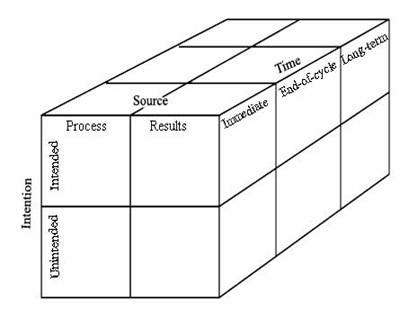

Theoretical Framework
All governmental agencies are required to conduct evaluations of their programs both to ensure accountability and to produce higher quality programs. For this to happen, however, someone must actively use the program evaluation information—in other words, the information must exert influence in context. Research tells us that this is more likely to occur when decision makers actively participate in the evaluation process (Patton, 1997, Cousins, 2003). The two theoretical frameworks that support this project, therefore, are (1) evaluation use/influence and (2) participation, each of which will be described below.
Evaluation use/influence. Since the 1970s, researchers have studied the use of program evaluation information (Leviton & Hughes, 1981, King & Pechman, 1984, King, 1988), and a comprehensive understanding of use is seen as essential for evaluation theory (Shadish, Cook, & Leviton, 1991). Furthermore, Utility is one of the four primary categories of evaluation standards suggested by the Joint Committee on Standards for Educational Evaluation. These standards are intended to ensure that an evaluation will serve the information needs of intended users. They include standards of performance in the following areas: stakeholder identification, evaluator credibility, information scope and selection, values identification, report clarity, report timeliness, and dissemination and evaluation impact.
Over the years, research on evaluation use has pointed to three broad categories: instrumental use, in which the results of a study are directly used in a decision; persuasive or symbolic use, where a decision maker seeks to influence others to his or her position; and conceptual use or enlightenment, whereby the results inform and educate decision-makers (Weiss, 1998). Researchers have identified a variety of factors that affect use, including evaluator credibility and political issues (Alkin, Daillak, & White, 1979). Utilization-focused evaluation (Patton, 1997) is the approach that most directly attends to evaluation use by individuals identified as primary intended users. In the most recent edition of Patton’s book, he adds a further type of use: process use, i.e., the use of the evaluation process itself in addition to the use of the results.
Although empirical study of evaluation use declined dramatically after the 1970s, additional discussion of this concept has emerged. Bardach (1984) presented a model of how the results of educational policy-related research are disseminated. Lester (1993) reviewed the knowledge utilization process in examining how state agencies use knowledge generated by policy analysis. There is a bibliography of articles related to evaluation use in health services and nursing at Laval University in Quebec (the “Knowledge Utilization—Utilization des Connaissances” http://kuuc.chair.ulaval.ca/english/pdf/bibliographie/evaluations.pdf ). Danin, Kershner, Hamilton, and Turner (2002) studied the impact of a national evaluation on local evaluation use and discussed the possibility of multidirectional effects. Kingsbury (2002) investigated the effects of program evaluation to see how information dissemination could contribute to federal agency goals.
More important for this proposal is a new conceptualization Kirkhart (2000) proposed, moving beyond evaluation use to considering the influence of evaluation. She recommended that this conceptualization be used both to map influence surrounding evaluations and to improve the validity of studies of influence. Kirkhart’s integrated theory proposes a three-dimensional approach of source of influence (process or results), time of influence (immediate, end-of-cycle, or long-term), and intention of influence (intended, unintended). She presents these as the three faces of a cube with each divided into discrete categories, although she concedes they probably are more of a continuum. First, influenced by Patton, the source of influence is considered to come from either the process of the evaluation or from its results. As discussed above, the notion of using evaluation results is the more traditional view, with more recent attention focused on process use. Additional conceptual framing comes from Greene (1988), who suggests three areas of process-based influence: cognitive, affective, and political. Cognitive influence is the understanding promoted by discussion, reflection, and analysis within the evaluation. Affective influence is the individual and collective feelings of worth and value that result from the evaluation. Political influence is the opportunity the evaluation provides to draw attention to social problems or to expose the dynamics of power and privilege.

The second face of Kirkhart’s influence cube is intention. Intention refers to the extent to which evaluation influence is purposefully directed, consciously recognized, and planfully anticipated. This includes both intended and unintended influences. Influences can be determined by considering three questions: What is the influence? who is influenced? and how is the influence achieved?
The cube’s third dimension is time. This acknowledges the dynamic nature of evaluation effects and proposes three time points to consider: immediate, end-of-cycle, and long term. These times are not meant to represent single events or a single time point, but periods of time and events occurring within that period or a process that runs through it. Immediate is relative to the time frame of the evaluation and so could span a few months to years. Immediate influences could also be short-lived or continue into other time periods. End-of-cycle influences include the different endpoints of an evaluation overall or within an evaluation, e.g., the formative evaluation of a workshop within the overall evaluation of a project. Long-term influence highlights the potential for influence well beyond the end of an evaluation cycle.
Henry and Mark (2003) propose another framework for analyzing the effects of program evaluation, one that emphasizes the pathways that lead to influence in addition to the labeling of the type. They identify three levels of influence—individual, interpersonal, and collective (public and private organizations)—and propose 15 different mechanisms affecting influence (e.g., attitude change, persuasion, and agenda setting).
Kirkhart’s and Henry and Mark’s conceptualizations of evaluation influence provide the basis for this comparative study of the extent and type of influence achieved through different approaches to program evaluation. Thirty years after initial research on evaluation use, high quality empirical study of influence marks a major addition to the field’s understanding of what happens when the process of evaluation and its products interact within a large agency’s program evaluations. Tracing evaluation use and influence within STEM programs has the additional practical benefit of identifying the ways in which evaluations make a difference in continuing programming.
Evaluation participation. The second theoretical framework, the notion that involving people in the evaluation process will result in greater ownership and ultimately more use, is an underlying premise of participatory evaluation methods. As suggested by Patton (1997) and documented by King (1998) and Cousins (2003), stakeholder participation can enhance evaluation relevance, ownership, and use. Cousins and Whitmore (1998) first proposed the study’s second framework for analyzing participatory evaluations. Their three-dimensional conceptualization of participatory inquiry includes the following dimensions: control of the evaluation process, stakeholder selection for participation, and depth of participation. A second category scheme, proposed by Burke (1998), suggests that the process of participatory evaluation has a spiral design with eight key decision points. The decision points are as follows: (a) deciding to do the study, (b) assembling an evaluation team, (c) making a plan, (d) collecting data, (e) synthesizing, (f) analyzing and verifying the data, (g) developing action plans for the future, and (h) controlling and using outcomes and reports. Taken together, the participatory inquiry dimensions and the key participatory decision points allow for detailed analysis of specific evaluation studies.
There are a variety of approaches to STEM program evaluation. Recall that the purpose of program evaluation is to provide information on the merit or worth of the program overall and that each STEM program includes all of its funded projects. Approaches to STEM program evaluation vary in the amount of control that projects have in the program evaluation and in local project staff participation. Theoretically, greater project participation should provide higher-quality program evaluations by capitalizing on the capacity and experiences of the multiple projects (Leff & Mulkern, 2002). Such participation, by engaging program staff in data collection and thoughtful reflection, may also support people in using evaluation data to improve STEM projects. In general, participatory evaluation means the involvement of the people actually receiving services or participating in the activities of the evaluand. In an NSF participatory program evaluation, however, the participants are most likely to be the evaluators and PIs of the projects. These individuals will be the targets of the proposed study. Lawrenz and Huffman (2003) have proposed a continuum of participation in STEM program evaluations: At one end of the continuum are program evaluations conducted by an entity separate from the projects within the program, with the external entity collecting the data and making the decisions to address the funder’s needs. Near the middle of the continuum are mandated evaluations with procedures that each of the projects must follow, but the projects collect their own data and turn them in to the central external evaluator. At the other end of the continuum are program evaluations where the projects independently determine the evaluation procedures and what data to collect.
The Beyond Evaluation Use project is investigating evaluations along this continuum using the theoretical frameworks to describe and track the ways in which use and influence are related to participation.
References:
Alkin, M.C., Daillak, R., & White, P. (1979). Using evaluations: Does evaluation make a difference? Beverly Hills, CA: Sage.
Bardach, E. (1984). The dissemination of policy research to policymakers. Knowledge: Creation, Diffusion, Utilization. 6: 125-144.
Burke, B. (1998). Evaluating for a change: Reflections on participatory methodology. In E. Whitmore (Ed.), Understanding and practicing participatory evaluation (pp. 43-56). New Directions for Evaluation (No. 80). San Francisco: Jossey-Bass.
Cousins, J.B. (2003). Utilization effects of participatory evaluation. In T. Keleghan & D.L. Stufflebeam (Eds.), International Handbook of Educational Evaluation. Boston: Kluwer Academic Publishers, 245-266.
Cousins, J., & Whitmore, E. (1998). Framing participatory evaluation. In E. Whitmore (Ed.), Understanding and practicing participatory evaluation (pp. 5-24). New Directions for Evaluation (No. 80). San Francisco: Jossey-Bass.
Danin, S., Kershner, K., Hamilton, B., and Turner, J. (2002). The impact of a national evaluation effort on the utilization of evaluation in local settings. Paper presented at the Annual Meeting of the American Educational Research Association (New Orleans, LA, April 1-5.)
Greene, J. (1988). Stakeholder participation and utilization in program evaluation. Evaluation Review, 12(2), 91-116.
Henry, G.T., & Mark, M.M. (2003). Beyond use: Understanding evaluation’s influence on attitudes and actions. American Journal of Evaluation. 24(3), 293-314.
King, J.A. (1998). Making sense of participatory evaluation practice. In E. Whitmore (Ed.), Understanding and practicing participatory evaluation (pp. 57-67). New Directions for Evaluation (No. 80). San Francisco: Jossey-Bass.
King, J.A. (1988). Research on evaluation use and its implications for the improvement of evaluation research and practice. Studies in Educational Evaluation, 14, 285-299
King, J.A., & Pechman, E.M. (1984). Pinning a wave to the shore: Conceptualizing school evaluation use. Educational Evaluation and Policy Analysis, 6(3), 241-251
Kingsbury, N. (2002). Program evaluation: Strategies for assessing how information dissemination contributes to agency goals. Report to Congressional Committees. Report No. GAO-09-00, ERIC Issue RIEJUL2003.
Kirkhart K., (2000). Reconceptualizing evaluation use: An integrated theory of influence. In V. Caracelli & H. Preskill (Eds.), The expanding scope of evaluation use. (pp. 5-23). New Directions for Evaluation (No. 94). San Francisco: Jossey-Bass.
Lawrenz, F. & Huffman, D. (2003). How can multi-site evaluations be participatory? American Journal of Evaluation, 24(4), 331-338.
Leff, H., & Mulkern, V. (2002). Lessons learned about science and participation from multisite evaluations. In J. Herrell & R. Straw (Eds.), Conducting multiple site evaluations in real-world settings (pp. 89-100). New Directions for Evaluation (No. 94). San Francisco: Jossey-Bass.
Lester, J.P. (1993). The utilization of policy analysis by state agency officials. Knowledge: Creation, Diffusion, Utilization. 14: 267-290.
Leviton, L.C., & Hughes, E.F.X. (1981). Research on the utilization of evaluations: A review and synthesis. Evaluation Review, 5, 525-548.
Patton, M.Q. (1997). Utilization-focused evaluation (3rd ed.). Thousand Oaks, CA: Sage.
Shadish, W.R., Cook, T.D., & Leviton, L.C. (1991). Foundations of program evaluation: Theories of practice. Newbury Park, CA: Sage Publications.
Weiss, C.H. (1998). Evaluation research: Methods for studying program and policies (2nd ed.). Upper Saddle River, NJ: Prentice-Hall Incorporated.